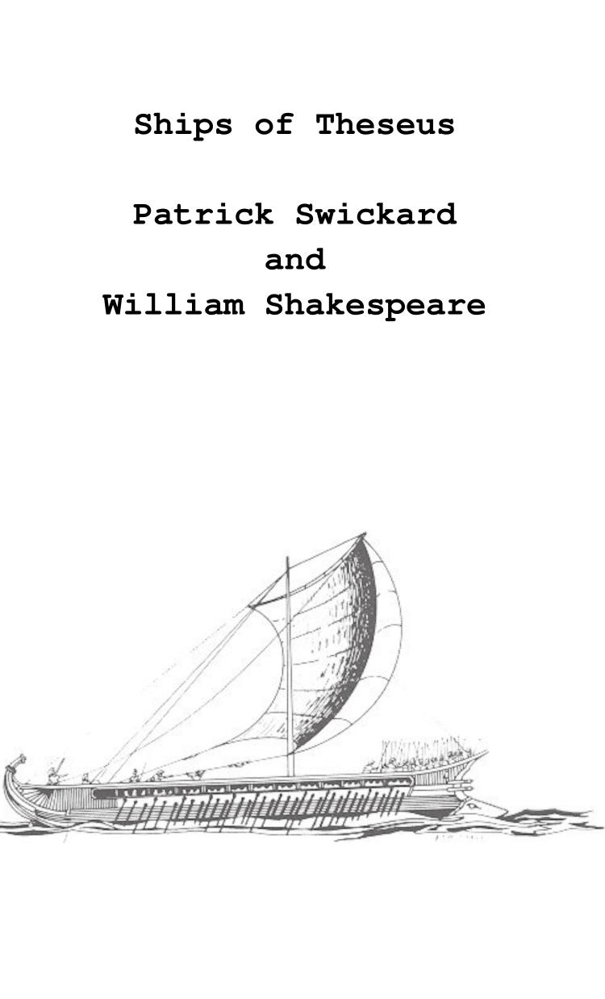

Ships of Theseus
Patrick Swickard and William Shakespeare
5"x8" paperback, 102 pages
Let me not to the marriage of true minds
Admit impediments; love is not love
Which alters when it alteration finds,
Or bends with the remover to remove.
O no, it is an ever-fixèd mark
That looks on tempests and is never shaken;
It is the star to every wand'ring bark
Whose worth's unknown, although his height be taken.
Love's not time's fool, though rosy lips and cheeks
Within his bending sickle's compass come.
Love alters not with his brief hours and weeks,
But bears it out even to the edge of doom:
If this be error and upon me proved,
I never writ, nor no man ever loved.
- William Shakespeare
Experimental book of poetry by Baltimore based poet Patrick Swickard. This is based on the philosophical concept of the Ship of Theseus. Legend has it that the city of Athens had Theseus’ original ship from the Age of Mythology, but over the centuries the ship would need various repairs. Each time the ship was repaired, some of the old planks would be replaced by new ones, and after doing this for years the ship had no original parts. This raises the question of whether the ship is really the same ship sailed by Theseus long ago even though all the parts have been replaced.
Starting with Shakespeare’s sonnets (all 154 of them), the author wrote a program to display a random sonnet with one random line missing, which he would then have to replace (matching the meter and rhyme scheme each time). This process was repeated until every line of Shakespeare was replaced with one by the author until the sonnets had been completely rewritten. This book is the result of this experiment.
For anyone interested, documentation of the project is available at the author’s website. A tech-savvy reader can even use the code and files available to “rewind” the book to any point between start and finish, to where some of the lines are Shakespeare’s and some are the author’s replacements. Or they can reuse the code to try their hand at performing the same task to see what they come up with.